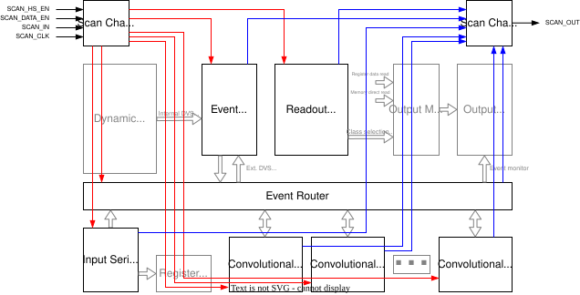
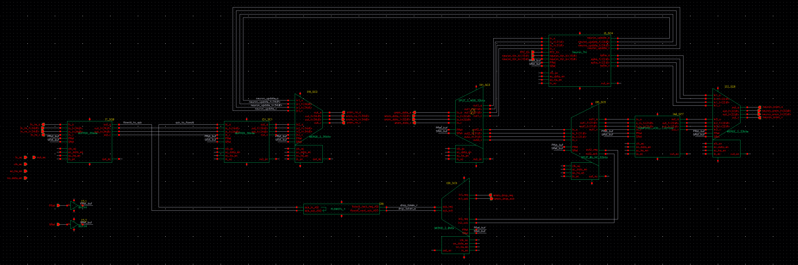

13.2. Scan Chain Connectivity
As shown in the following block diagram, the scan chain is divided into a number of sub-domains. Each sub-domain can be individually accessed by sending the appropriate JTAG command sequence to activate the scan chain and select the desired sub-domain.
The sub-domains are divided in order to be able to test smaller asynchronous networks independently due to the large size of the internal circuitry.
The scan chain outputs of the various domains are then muxed together by an output mux.
Note
Only a single scan chain sub-domain can be active at any time.


Speck2e Scan Chain Connectivity
13.2.1. Scan Chain Domains
As shown in the above block diagram, there are 13 main domains where the scan chain runs through. These cover all the asynchronous logic blocks included in Speck2e:
Input Interface
9 Layer Cores (0 to 8)
DVS Post Processing Core
Event Router
Readout Core
Note
Due to the different size of SRAM memories for Kernel and Neuron for the different layers, the SC bitstream length changes between layers.
13.2.1.1. Layer Core Sub-Domains
Every layer core scan chain is further divided into 3 sub-domains.
Convolutional Loop, Kernel Interface and Kernel SRAM
Leak Generator and Leak SRAM
Neuron Interface and Neuron SRAM
The following table summarizes SC lengths for the various sub-domains:
Domain Name |
Sub-Domain |
SCAN_BLK_ID |
Speck2e/et Length [bits] |
Speck2f Length [bits] |
Input Interface |
— |
0x0 |
3525 |
2811 |
Layer 0 |
Convolution and Kernel Interface |
0x4 |
10401 |
10401 |
Layer 1 |
Convolution and Kernel Interface |
0x5 |
5367 |
5367 |
Layer 2-8 |
Convolution and Kernel Interface |
0x6:0xC |
5101 |
5101 |
Layer 0-1 |
Neuron Interface |
0xD:0xE |
10451 |
10451 |
Layer 2 |
Neuron Interface |
0xF |
3379 |
3379 |
Layer 3-8 |
Neuron Interface |
0x10:0x15 |
2253 |
2253 |
Layers 0-1 |
Leak Generator |
0x16:17 |
1956 |
1956 |
Layers 2-8 |
Leak Generator |
0x18:1E |
1825 |
1825 |
Readout Layer |
— |
0x1 |
244 |
244 |
DVS and DVS Pre-Processing Layer |
— |
0x2 |
10758 |
10758 |
Router |
— |
0x3 |
47996 |
47996 |
13.3. Cell connectivity example

Speck2e Example async cell
Speck2e Example async cell connectivity graph